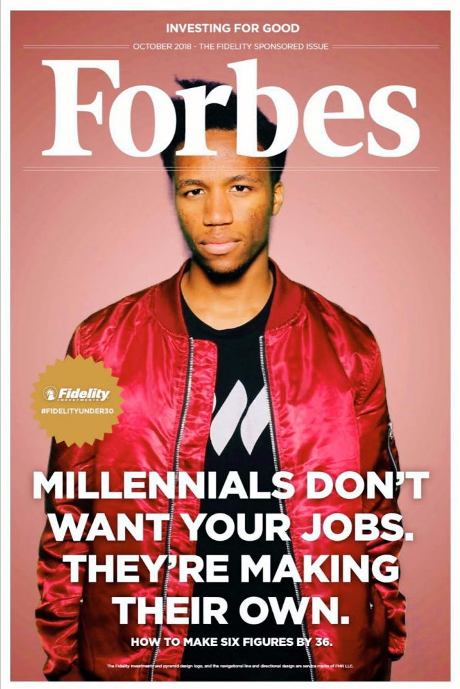

More About Me
Now that I've caught your attention with my best attempt at a smolder, welcome! I'm Elgin and I'm a UX and Game designer from Harvard University's class of 2019. I love design and the visual arts, and I'm really interested in emotional wellness, mental health, and psychology.
I also love jazz, indie music, learning languages, and empowering people to live more meaningful and fulfilling lives. This picture is a fun photo-op that I had the amazing opportunity to take part in during the Forbes Under 30 Conference as a Forbes Under 30 Scholar in 2018.
PROJECTS RESUME